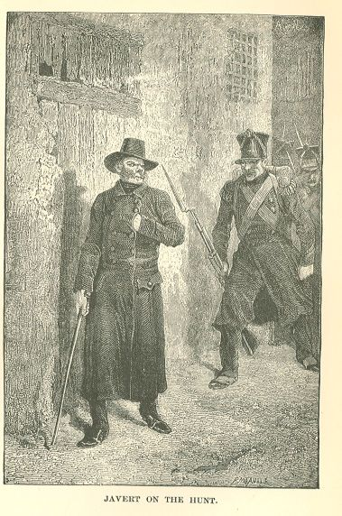

Les Misérables

Javert advanced slowly, sounding, searching on his way all the nooks of the street
like so many pockets of thieves.
When he reached the centre of the web he found the fly no longer there.
His exasperation can be imagined.
He interrogated his sentinel of the Rues Droit-Mur and Petit-Picpus; that agent, who
had remained imperturbably at his post, had not seen the man pass.
It sometimes happens that a stag is lost head and horns; that is to say, he escapes
although he has the pack on his very heels, and then the oldest huntsmen know not
what to say. Duvivier, Ligniville, and Desprez halt short. In a discomfiture of this
sort, Artonge exclaims, "It was not a stag, but a sorcerer." Javert would have liked
to utter the same cry.
His disappointment bordered for a moment on despair and rage.
It is certain that Napoleon made mistakes during the war with Russia, that Alexander
committed blunders in the war in India, that Caesar made mistakes in the war in Africa,
that Cyrus was at fault in the war in Scythia, and that Javert blundered in this campaign
against Jean Valjean. He was wrong, perhaps, in hesitating in his recognition of the
exconvict. The first glance should have sufficed him. He was wrong in not arresting
him purely and simply in the old building; he was wrong in not arresting him when
he positively recognized him in the Rue de Pontoise. He was wrong in taking counsel
with his auxiliaries in the full light of the moon in the Carrefour Rollin. Advice
is certainly useful; it is a good thing to know and to interrogate those of the dogs
who deserve confidence; but the hunter cannot be too cautious when he is chasing uneasy
animals like the wolf and the convict. Javert, by taking too much thought as to how
he should set the bloodhounds of the pack on the trail, alarmed the beast by giving
him wind of the dart, and so made him run. Above all, he was wrong in that after he
had picked up the scent again on the bridge of Austerlitz, he played that formidable
and puerile game of keeping such a man at the end of a thread. He thought himself
stronger than he was, and believed that he could play at the game of the mouse and
the lion. At the same time, he reckoned himself as too weak, when he judged it necessary
to obtain reinforcement. Fatal precaution, waste of precious time! Javert committed
all these blunders, and none the less was one of the cleverest and most correct spies
that ever existed. He was, in the full force of the term, what is called in venery
a knowing dog. But what is there that is perfect?
Great strategists have their eclipses.
The greatest follies are often composed, like the largest ropes, of a multitude of
strands. Take the cable thread by thread, take all the petty determining motives separately,
and you can break them one after the other, and you say, "That is all there is of
it!" Braid them, twist them together; the result is enormous: it is Attila hesitating
between Marcian on the east and Valentinian on the west; it is Hannibal tarrying at
Capua; it is Danton falling asleep at Arcis-sur-Aube.
However that may be, even at the moment when he saw that Jean Valjean had escaped
him, Javert did not lose his head. Sure that the convict who had broken his ban could
not be far off, he established sentinels, he organized traps and ambuscades, and beat
the quarter all that night. The first thing he saw was the disorder in the street
lantern whose rope had been cut. A precious sign which, however, led him astray, since
it caused him to turn all his researches in the direction of the Cul-de-Sac Genrot.
In this blind alley there were tolerably low walls which abutted on gardens whose
bounds adjoined the immense stretches of waste land. Jean Valjean evidently must have
fled in that direction. The fact is, that had he penetrated a little further in the
Cul-de-Sac Genrot, he would probably have done so and have been lost. Javert explored
these gardens and these waste stretches as though he had been hunting for a needle.
At daybreak he left two intelligent men on the outlook, and returned to the Prefecture
of Police, as much ashamed as a police spy who had been captured by a robber might
have been.
BOOK SIXTH.—LE PETIT-PICPUS
CHAPTER I—NUMBER 62 RUE PETIT-PICPUS
Nothing, half a century ago, more resembled every other carriage gate than the carriage
gate of Number 62 Rue Petit-Picpus. This entrance, which usually stood ajar in the
most inviting fashion, permitted a view of two things, neither of which have anything
very funereal about them,—a courtyard surrounded by walls hung with vines, and the
face of a lounging porter. Above the wall, at the bottom of the court, tall trees
were visible. When a ray of sunlight enlivened the courtyard, when a glass of wine
cheered up the porter, it was difficult to pass Number 62 Little Picpus Street without
carrying away a smiling impression of it. Nevertheless, it was a sombre place of which
one had had a glimpse.
The threshold smiled; the house prayed and wept.
If one succeeded in passing the porter, which was not easy,—which was even nearly
impossible for every one, for there was an open sesame! which it was necessary to
know,—if, the porter once passed, one entered a little vestibule on the right, on
which opened a staircase shut in between two walls and so narrow that only one person
could ascend it at a time, if one did not allow one's self to be alarmed by a daubing
of canary yellow, with a dado of chocolate which clothed this staircase, if one ventured
to ascend it, one crossed a first landing, then a second, and arrived on the first
story at a corridor where the yellow wash and the chocolate-hued plinth pursued one
with a peaceable persistency. Staircase and corridor were lighted by two beautiful
windows. The corridor took a turn and became dark. If one doubled this cape, one arrived
a few paces further on, in front of a door which was all the more mysterious because
it was not fastened. If one opened it, one found one's self in a little chamber about
six feet square, tiled, well-scrubbed, clean, cold, and hung with nankin paper with
green flowers, at fifteen sous the roll. A white, dull light fell from a large window,
with tiny panes, on the left, which usurped the whole width of the room. One gazed
about, but saw no one; one listened, one heard neither a footstep nor a human murmur.
The walls were bare, the chamber was not furnished; there was not even a chair.
One looked again, and beheld on the wall facing the door a quadrangular hole, about
a foot square, with a grating of interlacing iron bars, black, knotted, solid, which
formed squares—I had almost said meshes—of less than an inch and a half in diagonal
length. The little green flowers of the nankin paper ran in a calm and orderly manner
to those iron bars, without being startled or thrown into confusion by their funereal
contact. Supposing that a living being had been so wonderfully thin as to essay an
entrance or an exit through the square hole, this grating would have prevented it.
It did not allow the passage of the body, but it did allow the passage of the eyes;
that is to say, of the mind. This seems to have occurred to them, for it had been
re-enforced by a sheet of tin inserted in the wall a little in the rear, and pierced
with a thousand holes more microscopic than the holes of a strainer. At the bottom
of this plate, an aperture had been pierced exactly similar to the orifice of a letter
box. A bit of tape attached to a bell-wire hung at the right of the grated opening.
If the tape was pulled, a bell rang, and one heard a voice very near at hand, which
made one start.
"Who is there?" the voice demanded.
It was a woman's voice, a gentle voice, so gentle that it was mournful.
Here, again, there was a magical word which it was necessary to know. If one did not
know it, the voice ceased, the wall became silent once more, as though the terrified
obscurity of the sepulchre had been on the other side of it.
If one knew the password, the voice resumed, "Enter on the right."
One then perceived on the right, facing the window, a glass door surmounted by a frame
glazed and painted gray. On raising the latch and crossing the threshold, one experienced
precisely the same impression as when one enters at the theatre into a grated baignoire,
before the grating is lowered and the chandelier is lighted. One was, in fact, in
a sort of theatre-box, narrow, furnished with two old chairs, and a much-frayed straw
matting, sparely illuminated by the vague light from the glass door; a regular box,
with its front just of a height to lean upon, bearing a tablet of black wood. This
box was grated, only the grating of it was not of gilded wood, as at the opera; it
was a monstrous lattice of iron bars, hideously interlaced and riveted to the wall
by enormous fastenings which resembled clenched fists.
The first minutes passed; when one's eyes began to grow used to this cellar-like half-twilight,
one tried to pass the grating, but got no further than six inches beyond it. There
he encountered a barrier of black shutters, re-enforced and fortified with transverse
beams of wood painted a gingerbread yellow. These shutters were divided into long,
narrow slats, and they masked the entire length of the grating. They were always closed.
At the expiration of a few moments one heard a voice proceeding from behind these
shutters, and saying:—
"I am here. What do you wish with me?"
It was a beloved, sometimes an adored, voice. No one was visible. Hardly the sound
of a breath was audible. It seemed as though it were a spirit which had been evoked,
that was speaking to you across the walls of the tomb.
If one chanced to be within certain prescribed and very rare conditions, the slat
of one of the shutters opened opposite you; the evoked spirit became an apparition.
Behind the grating, behind the shutter, one perceived so far as the grating permitted
sight, a head, of which only the mouth and the chin were visible; the rest was covered
with a black veil. One caught a glimpse of a black guimpe, and a form that was barely
defined, covered with a black shroud. That head spoke with you, but did not look at
you and never smiled at you.
The light which came from behind you was adjusted in such a manner that you saw her
in the white, and she saw you in the black. This light was symbolical.
Nevertheless, your eyes plunged eagerly through that opening which was made in that
place shut off from all glances. A profound vagueness enveloped that form clad in
mourning. Your eyes searched that vagueness, and sought to make out the surroundings
of the apparition. At the expiration of a very short time you discovered that you
could see nothing. What you beheld was night, emptiness, shadows, a wintry mist mingled
with a vapor from the tomb, a sort of terrible peace, a silence from which you could
gather nothing, not even sighs, a gloom in which you could distinguish nothing, not
even phantoms.
What you beheld was the interior of a cloister.
It was the interior of that severe and gloomy edifice which was called the Convent
of the Bernardines of the Perpetual Adoration. The box in which you stood was the
parlor. The first voice which had addressed you was that of the portress who always
sat motionless and silent, on the other side of the wall, near the square opening,
screened by the iron grating and the plate with its thousand holes, as by a double
visor. The obscurity which bathed the grated box arose from the fact that the parlor,
which had a window on the side of the world, had none on the side of the convent.
Profane eyes must see nothing of that sacred place.
Nevertheless, there was something beyond that shadow; there was a light; there was
life in the midst of that death. Although this was the most strictly walled of all
convents, we shall endeavor to make our way into it, and to take the reader in, and
to say, without transgressing the proper bounds, things which story-tellers have never
seen, and have, therefore, never described.
CHAPTER II—THE OBEDIENCE OF MARTIN VERGA
This convent, which in 1824 had already existed for many a long year in the Rue Petit-Picpus,
was a community of Bernardines of the obedience of Martin Verga.
These Bernardines were attached, in consequence, not to Clairvaux, like the Bernardine
monks, but to Citeaux, like the Benedictine monks. In other words, they were the subjects,
not of Saint Bernard, but of Saint Benoit.
Any one who has turned over old folios to any extent knows that Martin Verga founded
in 1425 a congregation of Bernardines-Benedictines, with Salamanca for the head of
the order, and Alcala as the branch establishment.
This congregation had sent out branches throughout all the Catholic countries of Europe.
There is nothing unusual in the Latin Church in these grafts of one order on another.
To mention only a single order of Saint-Benoit, which is here in question: there are
attached to this order, without counting the obedience of Martin Verga, four congregations,—two
in Italy, Mont-Cassin and Sainte-Justine of Padua; two in France, Cluny and Saint-Maur;
and nine orders,—Vallombrosa, Granmont, the Celestins, the Camaldules, the Carthusians,
the Humilies, the Olivateurs, the Silvestrins, and lastly, Citeaux; for Citeaux itself,
a trunk for other orders, is only an offshoot of Saint-Benoit. Citeaux dates from
Saint Robert, Abbé de Molesme, in the diocese of Langres, in 1098. Now it was in 529
that the devil, having retired to the desert of Subiaco—he was old—had he turned hermit?—was
chased from the ancient temple of Apollo, where he dwelt, by Saint-Benoit, then aged
seventeen.
After the rule of the Carmelites, who go barefoot, wear a bit of willow on their throats,
and never sit down, the harshest rule is that of the Bernardines-Benedictines of Martin
Verga. They are clothed in black, with a guimpe, which, in accordance with the express
command of Saint-Benoit, mounts to the chin. A robe of serge with large sleeves, a
large woollen veil, the guimpe which mounts to the chin cut square on the breast,
the band which descends over their brow to their eyes,—this is their dress. All is
black except the band, which is white. The novices wear the same habit, but all in
white. The professed nuns also wear a rosary at their side.
The Bernardines-Benedictines of Martin Verga practise the Perpetual Adoration, like
the Benedictines called Ladies of the Holy Sacrament, who, at the beginning of this
century, had two houses in Paris,—one at the Temple, the other in the Rue Neuve-Sainte-Genevieve.
However, the Bernardines-Benedictines of the Petit-Picpus, of whom we are speaking,
were a totally different order from the Ladies of the Holy Sacrament, cloistered in
the Rue Neuve-Sainte-Genevieve and at the Temple. There were numerous differences
in their rule; there were some in their costume. The Bernardines-Benedictines of the
Petit-Picpus wore the black guimpe, and the Benedictines of the Holy Sacrament and
of the Rue Neuve-Sainte-Genevieve wore a white one, and had, besides, on their breasts,
a Holy Sacrament about three inches long, in silver gilt or gilded copper. The nuns
of the Petit-Picpus did not wear this Holy Sacrament. The Perpetual Adoration, which
was common to the house of the Petit-Picpus and to the house of the Temple, leaves
those two orders perfectly distinct. Their only resemblance lies in this practice
of the Ladies of the Holy Sacrament and the Bernardines of Martin Verga, just as there
existed a similarity in the study and the glorification of all the mysteries relating
to the infancy, the life, and death of Jesus Christ and the Virgin, between the two
orders, which were, nevertheless, widely separated, and on occasion even hostile.
The Oratory of Italy, established at Florence by Philip de Neri, and the Oratory of
France, established by Pierre de Berulle. The Oratory of France claimed the precedence,
since Philip de Neri was only a saint, while Berulle was a cardinal.
Let us return to the harsh Spanish rule of Martin Verga.
The Bernardines-Benedictines of this obedience fast all the year round, abstain from
meat, fast in Lent and on many other days which are peculiar to them, rise from their
first sleep, from one to three o'clock in the morning, to read their breviary and
chant matins, sleep in all seasons between serge sheets and on straw, make no use
of the bath, never light a fire, scourge themselves every Friday, observe the rule
of silence, speak to each other only during the recreation hours, which are very brief,
and wear drugget chemises for six months in the year, from September 14th, which is
the Exaltation of the Holy Cross, until Easter. These six months are a modification:
the rule says all the year, but this drugget chemise, intolerable in the heat of summer,
produced fevers and nervous spasms. The use of it had to be restricted. Even with
this palliation, when the nuns put on this chemise on the 14th of September, they
suffer from fever for three or four days. Obedience, poverty, chastity, perseverance
in their seclusion,—these are their vows, which the rule greatly aggravates.
The prioress is elected for three years by the mothers, who are called meres vocales
because they have a voice in the chapter. A prioress can only be re-elected twice,
which fixes the longest possible reign of a prioress at nine years.
They never see the officiating priest, who is always hidden from them by a serge curtain
nine feet in height. During the sermon, when the preacher is in the chapel, they drop
their veils over their faces. They must always speak low, walk with their eyes on
the ground and their heads bowed. One man only is allowed to enter the convent,—the
archbishop of the diocese.
There is really one other,—the gardener. But he is always an old man, and, in order
that he may always be alone in the garden, and that the nuns may be warned to avoid
him, a bell is attached to his knee.
Their submission to the prioress is absolute and passive. It is the canonical subjection
in the full force of its abnegation. As at the voice of Christ, ut voci Christi, at
a gesture, at the first sign, ad nutum, ad primum signum, immediately, with cheerfulness,
with perseverance, with a certain blind obedience, prompte, hilariter, perseveranter
et caeca quadam obedientia, as the file in the hand of the workman, quasi limam in
manibus fabri, without power to read or to write without express permission, legere
vel scribere non addiscerit sine expressa superioris licentia.
Each one of them in turn makes what they call reparation. The reparation is the prayer
for all the sins, for all the faults, for all the dissensions, for all the violations,
for all the iniquities, for all the crimes committed on earth. For the space of twelve
consecutive hours, from four o'clock in the afternoon till four o'clock in the morning,
or from four o'clock in the morning until four o'clock in the afternoon, the sister
who is making reparation remains on her knees on the stone before the Holy Sacrament,
with hands clasped, a rope around her neck. When her fatigue becomes unendurable,
she prostrates herself flat on her face against the earth, with her arms outstretched
in the form of a cross; this is her only relief. In this attitude she prays for all
the guilty in the universe. This is great to sublimity.
As this act is performed in front of a post on which burns a candle, it is called
without distinction, to make reparation or to be at the post. The nuns even prefer,
out of humility, this last expression, which contains an idea of torture and abasement.
To make reparation is a function in which the whole soul is absorbed. The sister at
the post would not turn round were a thunderbolt to fall directly behind her.
Besides this, there is always a sister kneeling before the Holy Sacrament. This station
lasts an hour. They relieve each other like soldiers on guard. This is the Perpetual
Adoration.
The prioresses and the mothers almost always bear names stamped with peculiar solemnity,
recalling, not the saints and martyrs, but moments in the life of Jesus Christ: as
Mother Nativity, Mother Conception, Mother Presentation, Mother Passion. But the names
of saints are not interdicted.
When one sees them, one never sees anything but their mouths.
All their teeth are yellow. No tooth-brush ever entered that convent. Brushing one's
teeth is at the top of a ladder at whose bottom is the loss of one's soul.
They never say my. They possess nothing of their own, and they must not attach themselves
to anything. They call everything our; thus: our veil, our chaplet; if they were speaking
of their chemise, they would say our chemise. Sometimes they grow attached to some
petty object,—to a book of hours, a relic, a medal that has been blessed. As soon
as they become aware that they are growing attached to this object, they must give
it up. They recall the words of Saint Therese, to whom a great lady said, as she was
on the point of entering her order, "Permit me, mother, to send for a Bible to which
I am greatly attached." "Ah, you are attached to something! In that case, do not enter
our order!"
Every person whatever is forbidden to shut herself up, to have a place of her own,
a chamber. They live with their cells open. When they meet, one says, "Blessed and
adored be the most Holy Sacrament of the altar!" The other responds, "Forever." The
same ceremony when one taps at the other's door. Hardly has she touched the door when
a soft voice on the other side is heard to say hastily, "Forever!" Like all practices,
this becomes mechanical by force of habit; and one sometimes says forever before the
other has had time to say the rather long sentence, "Praised and adored be the most
Holy Sacrament of the altar."
Among the Visitandines the one who enters says: "Ave Maria," and the one whose cell
is entered says, "Gratia plena." It is their way of saying good day, which is in fact
full of grace.
At each hour of the day three supplementary strokes sound from the church bell of
the convent. At this signal prioress, vocal mothers, professed nuns, lay-sisters,
novices, postulants, interrupt what they are saying, what they are doing, or what
they are thinking, and all say in unison if it is five o'clock, for instance, "At
five o'clock and at all hours praised and adored be the most Holy Sacrament of the
altar!" If it is eight o'clock, "At eight o'clock and at all hours!" and so on, according
to the hour.
This custom, the object of which is to break the thread of thought and to lead it
back constantly to God, exists in many communities; the formula alone varies. Thus
at The Infant Jesus they say, "At this hour and at every hour may the love of Jesus
kindle my heart!" The Bernardines-Benedictines of Martin Verga, cloistered fifty years
ago at Petit-Picpus, chant the offices to a solemn psalmody, a pure Gregorian chant,
and always with full voice during the whole course of the office. Everywhere in the
missal where an asterisk occurs they pause, and say in a low voice, "Jesus-Marie-Joseph."
For the office of the dead they adopt a tone so low that the voices of women can hardly
descend to such a depth. The effect produced is striking and tragic.
The nuns of the Petit-Picpus had made a vault under their grand altar for the burial
of their community. The Government, as they say, does not permit this vault to receive
coffins so they leave the convent when they die. This is an affliction to them, and
causes them consternation as an infraction of the rules.
They had obtained a mediocre consolation at best,—permission to be interred at a special
hour and in a special corner in the ancient Vaugirard cemetery, which was made of
land which had formerly belonged to their community.
On Fridays the nuns hear high mass, vespers, and all the offices, as on Sunday. They
scrupulously observe in addition all the little festivals unknown to people of the
world, of which the Church of France was so prodigal in the olden days, and of which
it is still prodigal in Spain and Italy. Their stations in the chapel are interminable.
As for the number and duration of their prayers we can convey no better idea of them
than by quoting the ingenuous remark of one of them: "The prayers of the postulants
are frightful, the prayers of the novices are still worse, and the prayers of the
professed nuns are still worse."
Once a week the chapter assembles: the prioress presides; the vocal mothers assist.
Each sister kneels in turn on the stones, and confesses aloud, in the presence of
all, the faults and sins which she has committed during the week. The vocal mothers
consult after each confession and inflict the penance aloud.
Besides this confession in a loud tone, for which all faults in the least serious
are reserved, they have for their venial offences what they call the coulpe. To make
one's coulpe means to prostrate one's self flat on one's face during the office in
front of the prioress until the latter, who is never called anything but our mother,
notifies the culprit by a slight tap of her foot against the wood of her stall that
she can rise. The coulpe or peccavi, is made for a very small matter—a broken glass,
a torn veil, an involuntary delay of a few seconds at an office, a false note in church,
etc.; this suffices, and the coulpe is made. The coulpe is entirely spontaneous; it
is the culpable person herself (the word is etymologically in its place here) who
judges herself and inflicts it on herself. On festival days and Sundays four mother
precentors intone the offices before a large reading-desk with four places. One day
one of the mother precentors intoned a psalm beginning with Ecce, and instead of Ecce
she uttered aloud the three notes do si sol; for this piece of absent-mindedness she
underwent a coulpe which lasted during the whole service: what rendered the fault
enormous was the fact that the chapter had laughed.
When a nun is summoned to the parlor, even were it the prioress herself, she drops
her veil, as will be remembered, so that only her mouth is visible.
The prioress alone can hold communication with strangers. The others can see only
their immediate family, and that very rarely. If, by chance, an outsider presents
herself to see a nun, or one whom she has known and loved in the outer world, a regular
series of negotiations is required. If it is a woman, the authorization may sometimes
be granted; the nun comes, and they talk to her through the shutters, which are opened
only for a mother or sister. It is unnecessary to say that permission is always refused
to men.
Such is the rule of Saint-Benoit, aggravated by Martin Verga.
These nuns are not gay, rosy, and fresh, as the daughters of other orders often are.
They are pale and grave. Between 1825 and 1830 three of them went mad.
CHAPTER III—AUSTERITIES
One is a postulant for two years at least, often for four; a novice for four. It is
rare that the definitive vows can be pronounced earlier than the age of twenty-three
or twenty-four years. The Bernardines-Benedictines of Martin Verga do not admit widows
to their order.
In their cells, they deliver themselves up to many unknown macerations, of which they
must never speak.
On the day when a novice makes her profession, she is dressed in her handsomest attire,
she is crowned with white roses, her hair is brushed until it shines, and curled.
Then she prostrates herself; a great black veil is thrown over her, and the office
for the dead is sung. Then the nuns separate into two files; one file passes close
to her, saying in plaintive accents, "Our sister is dead"; and the other file responds
in a voice of ecstasy, "Our sister is alive in Jesus Christ!"
At the epoch when this story takes place, a boarding-school was attached to the convent—a
boarding-school for young girls of noble and mostly wealthy families, among whom could
be remarked Mademoiselle de Saint-Aulaire and de Belissen, and an English girl bearing
the illustrious Catholic name of Talbot. These young girls, reared by these nuns between
four walls, grew up with a horror of the world and of the age. One of them said to
us one day, "The sight of the street pavement made me shudder from head to foot."
They were dressed in blue, with a white cap and a Holy Spirit of silver gilt or of
copper on their breast. On certain grand festival days, particularly Saint Martha's
day, they were permitted, as a high favor and a supreme happiness, to dress themselves
as nuns and to carry out the offices and practice of Saint-Benoit for a whole day.
In the early days the nuns were in the habit of lending them their black garments.
This seemed profane, and the prioress forbade it. Only the novices were permitted
to lend. It is remarkable that these performances, tolerated and encouraged, no doubt,
in the convent out of a secret spirit of proselytism and in order to give these children
a foretaste of the holy habit, were a genuine happiness and a real recreation for
the scholars. They simply amused themselves with it. It was new; it gave them a change.
Candid reasons of childhood, which do not, however, succeed in making us worldlings
comprehend the felicity of holding a holy water sprinkler in one's hand and standing
for hours together singing hard enough for four in front of a reading-desk.
The pupils conformed, with the exception of the austerities, to all the practices
of the convent. There was a certain young woman who entered the world, and who after
many years of married life had not succeeded in breaking herself of the habit of saying
in great haste whenever any one knocked at her door, "forever!" Like the nuns, the
pupils saw their relatives only in the parlor. Their very mothers did not obtain permission
to embrace them. The following illustrates to what a degree severity on that point
was carried. One day a young girl received a visit from her mother, who was accompanied
by a little sister three years of age. The young girl wept, for she wished greatly
to embrace her sister. Impossible. She begged that, at least, the child might be permitted
to pass her little hand through the bars so that she could kiss it. This was almost
indignantly refused.
CHAPTER IV—GAYETIES
None the less, these young girls filled this grave house with charming souvenirs.
At certain hours childhood sparkled in that cloister. The recreation hour struck.
A door swung on its hinges. The birds said, "Good; here come the children!" An irruption
of youth inundated that garden intersected with a cross like a shroud. Radiant faces,
white foreheads, innocent eyes, full of merry light, all sorts of auroras, were scattered
about amid these shadows. After the psalmodies, the bells, the peals, and knells and
offices, the sound of these little girls burst forth on a sudden more sweetly than
the noise of bees. The hive of joy was opened, and each one brought her honey. They
played, they called to each other, they formed into groups, they ran about; pretty
little white teeth chattered in the corners; the veils superintended the laughs from
a distance, shades kept watch of the sunbeams, but what mattered it? Still they beamed
and laughed. Those four lugubrious walls had their moment of dazzling brilliancy.
They looked on, vaguely blanched with the reflection of so much joy at this sweet
swarming of the hives. It was like a shower of roses falling athwart this house of
mourning. The young girls frolicked beneath the eyes of the nuns; the gaze of impeccability
does not embarrass innocence. Thanks to these children, there was, among so many austere
hours, one hour of ingenuousness. The little ones skipped about; the elder ones danced.
In this cloister play was mingled with heaven. Nothing is so delightful and so august
as all these fresh, expanding young souls. Homer would have come thither to laugh
with Perrault; and there was in that black garden, youth, health, noise, cries, giddiness,
pleasure, happiness enough to smooth out the wrinkles of all their ancestresses, those
of the epic as well as those of the fairy-tale, those of the throne as well as those
of the thatched cottage from Hecuba to la Mère-Grand.
In that house more than anywhere else, perhaps, arise those children's sayings which
are so graceful and which evoke a smile that is full of thoughtfulness. It was between
those four gloomy walls that a child of five years exclaimed one day: "Mother! one
of the big girls has just told me that I have only nine years and ten months longer
to remain here. What happiness!"
It was here, too, that this memorable dialogue took place:—
A Vocal Mother. Why are you weeping, my child?
The child (aged six). I told Alix that I knew my French history. She says that I do
not know it, but I do.
Alix, the big girl (aged nine). No; she does not know it.
The Mother. How is that, my child?
Alix. She told me to open the book at random and to ask her any question in the book,
and she would answer it.
"Well?"
"She did not answer it."
"Let us see about it. What did you ask her?"
"I opened the book at random, as she proposed, and I put the first question that I
came across."
"And what was the question?"
"It was, 'What happened after that?'"
It was there that that profound remark was made anent a rather greedy paroquet which
belonged to a lady boarder:—
"How well bred! it eats the top of the slice of bread and butter just like a person!"
It was on one of the flagstones of this cloister that there was once picked up a confession
which had been written out in advance, in order that she might not forget it, by a
sinner of seven years:—
"Father, I accuse myself of having been avaricious.
"Father, I accuse myself of having been an adulteress.
"Father, I accuse myself of having raised my eyes to the gentlemen."
It was on one of the turf benches of this garden that a rosy mouth six years of age
improvised the following tale, which was listened to by blue eyes aged four and five
years:—
"There were three little cocks who owned a country where there were a great many flowers.
They plucked the flowers and put them in their pockets. After that they plucked the
leaves and put them in their playthings. There was a wolf in that country; there was
a great deal of forest; and the wolf was in the forest; and he ate the little cocks."
And this other poem:—
"There came a blow with a stick.
"It was Punchinello who bestowed it on the cat.
"It was not good for her; it hurt her.
"Then a lady put Punchinello in prison."
It was there that a little abandoned child, a foundling whom the convent was bringing
up out of charity, uttered this sweet and heart-breaking saying. She heard the others
talking of their mothers, and she murmured in her corner:—
"As for me, my mother was not there when I was born!"
There was a stout portress who could always be seen hurrying through the corridors
with her bunch of keys, and whose name was Sister Agatha. The big big girls—those
over ten years of age—called her Agathocles.
The refectory, a large apartment of an oblong square form, which received no light
except through a vaulted cloister on a level with the garden, was dark and damp, and,
as the children say, full of beasts. All the places round about furnished their contingent
of insects.
Each of its four corners had received, in the language of the pupils, a special and
expressive name. There was Spider corner, Caterpillar corner, Wood-louse corner, and
Cricket corner.
Cricket corner was near the kitchen and was highly esteemed. It was not so cold there
as elsewhere. From the refectory the names had passed to the boarding-school, and
there served as in the old College Mazarin to distinguish four nations. Every pupil
belonged to one of these four nations according to the corner of the refectory in
which she sat at meals. One day Monseigneur the Archbishop while making his pastoral
visit saw a pretty little rosy girl with beautiful golden hair enter the class-room
through which he was passing.
He inquired of another pupil, a charming brunette with rosy cheeks, who stood near
him:—
"Who is that?"
"She is a spider, Monseigneur."
"Bah! And that one yonder?"
"She is a cricket."
"And that one?"
"She is a caterpillar."
"Really! and yourself?"
"I am a wood-louse, Monseigneur."
Every house of this sort has its own peculiarities. At the beginning of this century
Ecouen was one of those strict and graceful places where young girls pass their childhood
in a shadow that is almost august. At Ecouen, in order to take rank in the procession
of the Holy Sacrament, a distinction was made between virgins and florists. There
were also the "dais" and the "censors,"—the first who held the cords of the dais,
and the others who carried incense before the Holy Sacrament. The flowers belonged
by right to the florists. Four "virgins" walked in advance. On the morning of that
great day it was no rare thing to hear the question put in the dormitory, "Who is
a virgin?"
Madame Campan used to quote this saying of a "little one" of seven years, to a "big
girl" of sixteen, who took the head of the procession, while she, the little one,
remained at the rear, "You are a virgin, but I am not."
CHAPTER V—DISTRACTIONS
Above the door of the refectory this prayer, which was called the white Paternoster,
and which possessed the property of bearing people straight to paradise, was inscribed
in large black letters:—
"Little white Paternoster, which God made, which God said, which God placed in paradise.
In the evening, when I went to bed, I found three angels sitting on my bed, one at
the foot, two at the head, the good Virgin Mary in the middle, who told me to lie
down without hesitation. The good God is my father, the good Virgin is my mother,
the three apostles are my brothers, the three virgins are my sisters. The shirt in
which God was born envelopes my body; Saint Margaret's cross is written on my breast.
Madame the Virgin was walking through the meadows, weeping for God, when she met M.
Saint John. 'Monsieur Saint John, whence come you?' 'I come from Ave Salus.' 'You
have not seen the good God; where is he?' 'He is on the tree of the Cross, his feet
hanging, his hands nailed, a little cap of white thorns on his head.' Whoever shall
say this thrice at eventide, thrice in the morning, shall win paradise at the last."
In 1827 this characteristic orison had disappeared from the wall under a triple coating
of daubing paint. At the present time it is finally disappearing from the memories
of several who were young girls then, and who are old women now.
A large crucifix fastened to the wall completed the decoration of this refectory,
whose only door, as we think we have mentioned, opened on the garden. Two narrow tables,
each flanked by two wooden benches, formed two long parallel lines from one end to
the other of the refectory. The walls were white, the tables were black; these two
mourning colors constitute the only variety in convents. The meals were plain, and
the food of the children themselves severe. A single dish of meat and vegetables combined,
or salt fish—such was their luxury. This meagre fare, which was reserved for the pupils
alone, was, nevertheless, an exception. The children ate in silence, under the eye
of the mother whose turn it was, who, if a fly took a notion to fly or to hum against
the rule, opened and shut a wooden book from time to time. This silence was seasoned
with the lives of the saints, read aloud from a little pulpit with a desk, which was
situated at the foot of the crucifix. The reader was one of the big girls, in weekly
turn. At regular distances, on the bare tables, there were large, varnished bowls
in which the pupils washed their own silver cups and knives and forks, and into which
they sometimes threw some scrap of tough meat or spoiled fish; this was punished.
These bowls were called ronds d'eau. The child who broke the silence "made a cross
with her tongue." Where? On the ground. She licked the pavement. The dust, that end
of all joys, was charged with the chastisement of those poor little rose-leaves which
had been guilty of chirping.
There was in the convent a book which has never been printed except as a unique copy,
and which it is forbidden to read. It is the rule of Saint-Benoit. An arcanum which
no profane eye must penetrate. Nemo regulas, seu constitutiones nostras, externis
communicabit.
The pupils one day succeeded in getting possession of this book, and set to reading
it with avidity, a reading which was often interrupted by the fear of being caught,
which caused them to close the volume precipitately.
From the great danger thus incurred they derived but a very moderate amount of pleasure.
The most "interesting thing" they found were some unintelligible pages about the sins
of young boys.
They played in an alley of the garden bordered with a few shabby fruit-trees. In spite
of the extreme surveillance and the severity of the punishments administered, when
the wind had shaken the trees, they sometimes succeeded in picking up a green apple
or a spoiled apricot or an inhabited pear on the sly. I will now cede the privilege
of speech to a letter which lies before me, a letter written five and twenty years
ago by an old pupil, now Madame la Duchesse de——one of the most elegant women in Paris.
I quote literally: "One hides one's pear or one's apple as best one may. When one
goes up stairs to put the veil on the bed before supper, one stuffs them under one's
pillow and at night one eats them in bed, and when one cannot do that, one eats them
in the closet." That was one of their greatest luxuries.
Once—it was at the epoch of the visit from the archbishop to the convent—one of the
young girls, Mademoiselle Bouchard, who was connected with the Montmorency family,
laid a wager that she would ask for a day's leave of absence—an enormity in so austere
a community. The wager was accepted, but not one of those who bet believed that she
would do it. When the moment came, as the archbishop was passing in front of the pupils,
Mademoiselle Bouchard, to the indescribable terror of her companions, stepped out
of the ranks, and said, "Monseigneur, a day's leave of absence." Mademoiselle Bouchard
was tall, blooming, with the prettiest little rosy face in the world. M. de Quelen
smiled and said, "What, my dear child, a day's leave of absence! Three days if you
like. I grant you three days." The prioress could do nothing; the archbishop had spoken.
Horror of the convent, but joy of the pupil. The effect may be imagined.
This stern cloister was not so well walled off, however, but that the life of the
passions of the outside world, drama, and even romance, did not make their way in.
To prove this, we will confine ourselves to recording here and to briefly mentioning
a real and incontestable fact, which, however, bears no reference in itself to, and
is not connected by any thread whatever with the story which we are relating. We mention
the fact for the sake of completing the physiognomy of the convent in the reader's
mind.
About this time there was in the convent a mysterious person who was not a nun, who
was treated with great respect, and who was addressed as Madame Albertine. Nothing
was known about her, save that she was mad, and that in the world she passed for dead.
Beneath this history it was said there lay the arrangements of fortune necessary for
a great marriage.
This woman, hardly thirty years of age, of dark complexion and tolerably pretty, had
a vague look in her large black eyes. Could she see? There was some doubt about this.
She glided rather than walked, she never spoke; it was not quite known whether she
breathed. Her nostrils were livid and pinched as after yielding up their last sigh.
To touch her hand was like touching snow. She possessed a strange spectral grace.
Wherever she entered, people felt cold. One day a sister, on seeing her pass, said
to another sister, "She passes for a dead woman." "Perhaps she is one," replied the
other.
A hundred tales were told of Madame Albertine. This arose from the eternal curiosity
of the pupils. In the chapel there was a gallery called L'Œil de Bœuf. It was in this
gallery, which had only a circular bay, an œil de bœuf, that Madame Albertine listened
to the offices. She always occupied it alone because this gallery, being on the level
of the first story, the preacher or the officiating priest could be seen, which was
interdicted to the nuns. One day the pulpit was occupied by a young priest of high
rank, M. Le Duc de Rohan, peer of France, officer of the Red Musketeers in 1815 when
he was Prince de Leon, and who died afterward, in 1830, as cardinal and Archbishop
of Besancon. It was the first time that M. de Rohan had preached at the Petit-Picpus
convent. Madame Albertine usually preserved perfect calmness and complete immobility
during the sermons and services. That day, as soon as she caught sight of M. de Rohan,
she half rose, and said, in a loud voice, amid the silence of the chapel, "Ah! Auguste!"
The whole community turned their heads in amazement, the preacher raised his eyes,
but Madame Albertine had relapsed into her immobility. A breath from the outer world,
a flash of life, had passed for an instant across that cold and lifeless face and
had then vanished, and the mad woman had become a corpse again.
Those two words, however, had set every one in the convent who had the privilege of
speech to chattering. How many things were contained in that "Ah! Auguste!" what revelations!
M. de Rohan's name really was Auguste. It was evident that Madame Albertine belonged
to the very highest society, since she knew M. de Rohan, and that her own rank there
was of the highest, since she spoke thus familiarly of so great a lord, and that there
existed between them some connection, of relationship, perhaps, but a very close one
in any case, since she knew his "pet name."
Two very severe duchesses, Mesdames de Choiseul and de Serent, often visited the community,
whither they penetrated, no doubt, in virtue of the privilege Magnates mulieres, and
caused great consternation in the boarding-school. When these two old ladies passed
by, all the poor young girls trembled and dropped their eyes.
Moreover, M. de Rohan, quite unknown to himself, was an object of attention to the
school-girls. At that epoch he had just been made, while waiting for the episcopate,
vicar-general of the Archbishop of Paris. It was one of his habits to come tolerably
often to celebrate the offices in the chapel of the nuns of the Petit-Picpus. Not
one of the young recluses could see him, because of the serge curtain, but he had
a sweet and rather shrill voice, which they had come to know and to distinguish. He
had been a mousquetaire, and then, he was said to be very coquettish, that his handsome
brown hair was very well dressed in a roll around his head, and that he had a broad
girdle of magnificent moire, and that his black cassock was of the most elegant cut
in the world. He held a great place in all these imaginations of sixteen years.
Not a sound from without made its way into the convent. But there was one year when
the sound of a flute penetrated thither. This was an event, and the girls who were
at school there at the time still recall it.
It was a flute which was played in the neighborhood. This flute always played the
same air, an air which is very far away nowadays,—"My Zetulbe, come reign o'er my
soul,"—and it was heard two or three times a day. The young girls passed hours in
listening to it, the vocal mothers were upset by it, brains were busy, punishments
descended in showers. This lasted for several months. The girls were all more or less
in love with the unknown musician. Each one dreamed that she was Zetulbe. The sound
of the flute proceeded from the direction of the Rue Droit-Mur; and they would have
given anything, compromised everything, attempted anything for the sake of seeing,
of catching a glance, if only for a second, of the "young man" who played that flute
so deliciously, and who, no doubt, played on all these souls at the same time. There
were some who made their escape by a back door, and ascended to the third story on
the Rue Droit-Mur side, in order to attempt to catch a glimpse through the gaps. Impossible!
One even went so far as to thrust her arm through the grating, and to wave her white
handkerchief. Two were still bolder. They found means to climb on a roof, and risked
their lives there, and succeeded at last in seeing "the young man." He was an old
emigre gentleman, blind and penniless, who was playing his flute in his attic, in
order to pass the time.